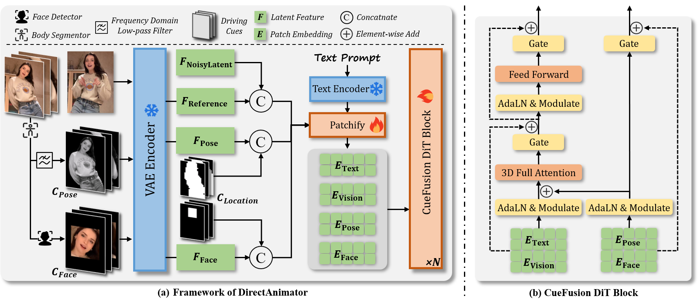
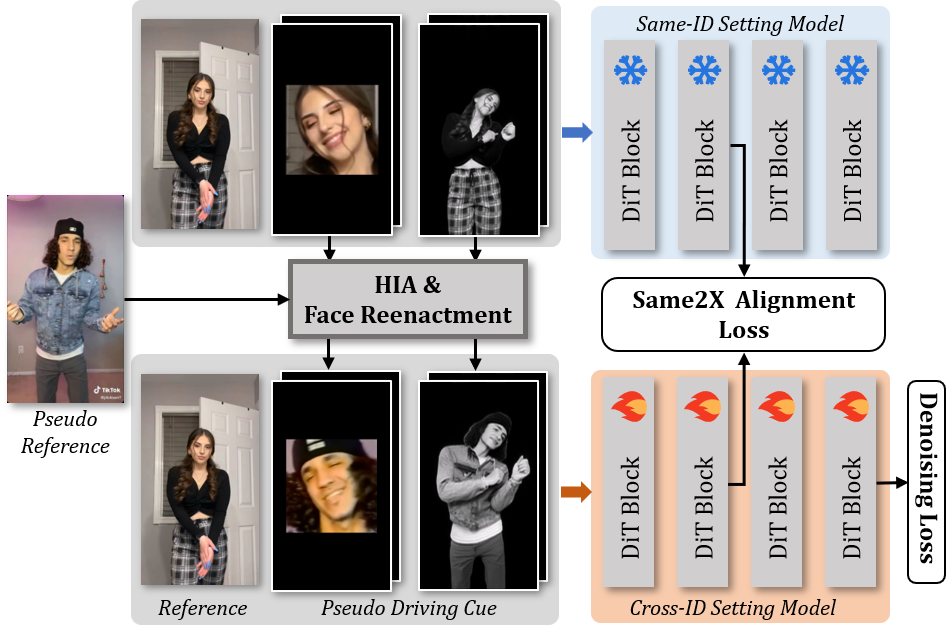

Beyond Skeletons: Learning Animation Directly from Driving Videos with Same2X Training Strategy
-
Anonymous Submission
Figure1. Our proposed driving cue provides a more robust representation for complex motions and self-occlusions. Left: Errors in skeleton maps such as front-back confusion, inaccurate hand localization, and missing limbs result in noticeable artifacts in StableAnimator outputs. In contrast, DirectAnimator uses raw pixels from the driving video as driving signals, generating accurate and realistic frames. Right: The Same2X training strategy significantly improves training efficiency in cross-ID scenarios (Stage 2), reaching the same loss level 6.7× faster than training without it.
1. Abstract
Human Image Animation aims to generate a video from a static reference image, guided by pose information extracted from a driving video. Existing approaches often rely on pose estimators to extract intermediate representations, but such signals are prone to errors under occlusion, motion blur, or complex articulation. In this work, we propose DirectAnimator, a novel HIA framework that bypasses pose extraction and directly learns from raw driving videos. We introduce a structured Driving Cue Triplet consisting of pose, face, and location cues to capture motion, expression, and alignment signals in a semantically rich yet stable manner. To tackle the challenges of training under cross-ID settings, we further propose the Same2X training strategy, which aligns internal representations learned from same-ID data to regularize cross-ID learning. Extensive experiments demonstrate that DirectAnimator achieves state-of-the-art animation quality while significantly improving training efficiency and robustness in challenging scenarios.
2. Network Architecture
The overall architecture of DirectAnimator is illustrated in Figure 2 (a). The input comprises a reference image I and a driving video sequence D1:N = [D1, ..., DN]. We first preprocess the driving video to extract driving cues that capture essential pose and expression information. These cues are then encoded into latent features using a 3D Variational Autoencoder (3D VAE), and subsequently transformed into a sequence of visual patch embeddings via a Patchify module (DiT). The resulting embeddings are fed into the proposed CueFusion DiT Block, which performs multi-source feature fusion and denoising to generate the animated frames.
Figure 2. Overview of DirectAnimator. (a) We replace the skeleton maps with our proposed Driving Cue triplet: Pose Cue (motion), Face Cue (expression), and Location Cue (alignment). A frozen VAE encoder maps the reference image, pose cue, and face cue into the latent space. Pose and face latents are each concatenated with their corresponding masks from the location cue. These features are then patchified and fed into the CF-DiT Block. (b) The CF-DiT Block injects pose and face cues via adaptive LayerNorm with time-conditioned modulation, and uses gated residuals to ensure stable and controllable denoising.
(1) Driving Cue Extraction
To overcome the limitations of pose estimators, we propose a pose-free representation called the Driving Cue Triplet, which captures motion, expression, and spatial alignment directly from raw video frames. This triplet consists of:- Pose Cue: foreground masks filtered in the frequency domain to emphasize motion while suppressing irrelevant details;
- Face Cue: cropped and centered facial regions that preserve expressive information;
- Location Cue: soft body and face masks that serve as spatial priors for aligning the reference and driving identities.
Together, these cues form a stable, semantically rich control signal for human animation without relying on explicit keypoints or skeleton maps.
Figure 3. Examples of driving cues.
(2) CueFusion DiT Block
To effectively inject motion and expression cues into the diffusion process, we introduce the CueFusion DiT (CF-DiT) Block, illustrated in Figure 2(b). It incorporates driving cues via adaptive Layer Normalization (AdaLN) and gated residual connections, enabling stable and controllable animation synthesis.
Given a time embedding \( e_t \), we first compute modulation parameters for the pose and face cues through an MLP:
These parameters are used to modulate the normalized embeddings of the pose cue \( e_p \) and face cue \( e_f \):
We then integrate both raw and modulated cues using gated residual connections:
These enriched embeddings are added to the DiT’s text and vision features before entering the 3D attention layers, ensuring that driving cues are seamlessly fused throughout the denoising process. This design improves both the controllability and robustness of the animation output.
3. Same2X Training Strategy

Figure 4. Overview of the Same2X training strategy.
To ease training in the cross-ID setting, we propose the Same2X training strategy, whose pipeline is illustrated in Figure 4. The strategy consists of a same-ID and a cross-ID training stage. In the same-ID training stage, we train the model using pairs of reference images and driving videos from the same video clip. In the cross-ID stage, we generate pseudo driving cues from same-ID data using StableAnimator and Face-Adapter to simulate cross-ID conditions.
During the cross-ID training stage, the model is supervised not only by denoising loss but also by feature alignment signals from the model trained under same-ID setting. To this end, we introduce a Same2X Alignment Loss (S2X Loss) to guide the feature dynamics:
Here, \( \theta_S \) and \( \theta_X \) denote the model trained under same-ID and cross-ID settings, respectively. \( h_s^{[D\_n]} \) and \( h_x^{[D\_n]} \) represent the patch embeddings at the \( D \)-th DiT block for the same-ID and cross-ID models, and \( n \) indexes the patch tokens. The function \( \text{sim}(\cdot, \cdot) \) measures cosine similarity.
We combine the S2X Loss and denoising loss to train DirectAnimator, with the overall loss function in the cross-ID training stage formulated as:
where \( \lambda \) is a factor controlling the contribution of the S2X loss. As demonstrated in Figure 1, the Same2X training strategy significantly accelerates convergence in the cross-ID setting by alleviating the learning difficulty. To the best of our knowledge, this is the first approach to leverage feature alignment of different setting for training HIA models.
4. Comparisions with Existed Approaches
We compare DirectAnimator with several state-of-the-art human image animation methods, including AnimateAnyone, MimicMotion, StableAnimator, and UniAnimate-DiT . As shown in the following video comparisons, DirectAnimator consistently produces more accurate body motions, realistic facial expressions, and stronger identity preservation, even in the presence of occlusions or rapid movements. Unlike pose-driving baselines, our method leverages raw visual cues and exhibits greater robustness in challenging scenarios.
5. Animation Results
We present qualitative animation results generated by DirectAnimator.
Our method delivers photorealistic, identity-preserving animations with smooth motion dynamics and expressive facial details, even in challenging scenarios such as occlusion, motion blur, or cross-domain appearance gaps.
6. Other domain results
DirectAnimator exhibits robust generalization capabilities across other domains.
(1) Other domain reference: AI-generated characters & chibi characters
(2) Other domain driving video: EverybodyDanceNow Dataset
(3) Other domain driving video: FineGym Dataset
(4) Other domain driving video: UCF101(TaiChi) Dataset
7. Results on Challenging Driving Videos
(1) Motion Blur
Videos have been slowed down to highlight the motion blur effect.
(2) Low Resolution and Poor Segmentation Results
(3) Poor Lighting Conditions
8. Results on Spatial Mismatch Cases
(1) Large Reference Identity + Small Driving Identity
(2) Small Reference Identity + Large Driving Identity
Acknowledgements
The website template was borrowed from Michaël Gharbi and Mip-NeRF.